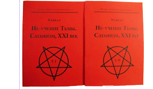

Black Fire Pandemonium
Сайт, помимо основного адреса warrax.net, имеет зеркало warrax.info (пока обновляется с некоторой задержкой).
|
 НЕ-Учение Тьмы. Сатанизм, XXI век |
|
проект «Δαίμων» |
Последние добавления: 11.11.2016
- Понимание ЛаВея в XXI веке, лекция LV-SB:04: Бог, которому ты поклоняешься, может быть тобой (19.10.2016)
- Рогатый салют Дню Независимости! — А.Ш. ЛаВей
- Услышьте про сексуальную объективацию (дополнен п. 20) — Matt G. Paradise
- Сталинское экономическое чудо. О Великом Архитекторе и Обществе Будущего — П. Краснов
- Добавил 20 картинок в раздел "Социальное" [140]
31.10.2016
- Услышьте про сексуальную объективацию — Matt G. Paradise
- Психопатологоанатомия VI: Je suis педофил (Джок Стерджес) — Warrax
- Добавил 14 картинок в раздел "Религия: вера" [120] [131]
28.10.2016
- Абсолюты могут испортить абсолютно — Matt G. Paradise
- Лекция L:08 «Мыслимость и вычисляемость» (27.10.2016)
- Добавил 20 картинок в раздел "Религия: церковь" [80]
23.10.2016
- Производитель или потребитель? Кто из них ты? — Matt G. Paradise
- По терминологии. Империя и ымперия / В защиту Империи от Ымперии (добавлено) — Джагг
- Маркс против русской революции (конспект) — С.Г. Кара-Мурза
- Rat's FAQ 3в: Клетки: погрызание таковых (11.10.2016)
- Понимание ЛаВея в XXI веке, лекция LV-SB:03, Разыскивается бог — живым или мертвым (19.10.2016)
- Добавил 6 картинок в раздел "Атеизм" [29]
- Мои работы (последнее добавлено 31.10.2016)
- Видео (последнее добавлено
11.11.2016)
- Понимание ЛаВея в XXI веке, Сатанинская Библия (последнее добавлено 11.11.2016)
- Видеолекции по логике (последнее добавлено 28.10.2016)
- Rat's FAQ (последнее добавлено 02.09.2016)
- Проект «Δαίμων»
(последнее добавлено 08.06.2016)
- Восприятие ЛаВея в XXI веке (последнее добавлено 08.10.2016)
- другое видео от «Δαίμων» (последнее добавлено 29.04.2015)
- Satanic Oldschool Death Metal group «Sodomic Baptism» (обновлено 29.04.2015)
- Сатанинское (последнее добавлено 31.10.2016)
- Социальное (последнее добавлено 31.10.2016)
- Социалистическое (последнее добавлено 11.11.2016)
- Гносеологическое (последнее добавлено 01.10.2016)
- Религиоведное (последнее добавлено 22.07.2016)
- Научное и историческое (последнее добавлено 06.09.2016)
- Соционика (последнее добавлено 17.06.2014)
- Прозаическое (последнее добавлено 08.07.2016)
- Поэтическое (последнее добавлено 21.06.2014)
- Кинематографическое (последнее добавлено 19.05.2016)
- Крысы (последнее добавлено 23.10.2016)
- Поучительные картинки (последнее добавлено 31.10.2016)
- FAQ по возвращению права на ношение короткоствольного оружия в России v. 1.12 (10/04/11)
- Журнал CONTRA DEI 1-2
Если кто хочет написать, то адрес известен: warrax@warrax.net (ставить понятный subj!)
LiveJournal: http://darkhon.livejournal.com/
Канал YouTube WarraxBFP: https://www.youtube.com/channel/UChsiudPZ0kQd-_Jyxel-bQw
Канал YouTube DaimonBFP: http://www.youtube.com/DaimonBFP
На умные вопросы я всегда стараюсь ответить, но не стесняйтесь напоминать, если задерживаюсь с ответом.
Уведомление. Cайт восстановлен, убрано много-много всяческой шняги. Если кто считает, что я убрал что-либо путное, то пишите в почту, посмотрю ещё раз (книги восстанавливать не буду, всё есть в инете и так). Оформление и движок намечены к концу года, раньше не получится. Сайт сделан на чистом HTML, и поэтому легко копируется любой сайтокачалкой с дальнейшей периодической синхронизацией.
Satanas Nobiscum! — Warrax